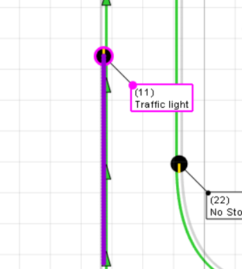
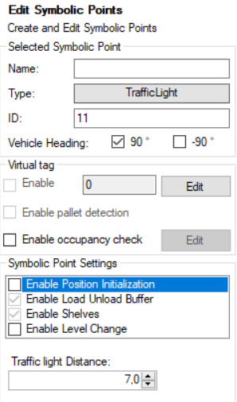
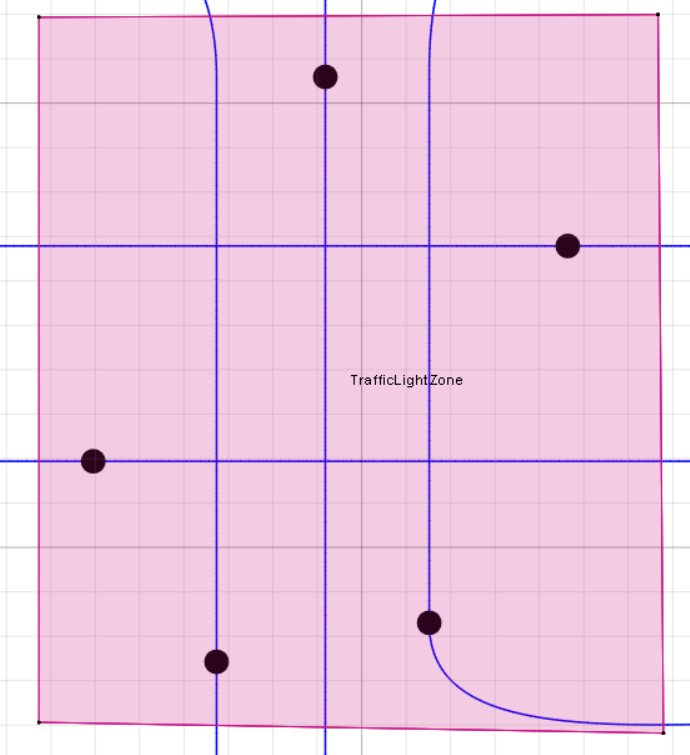
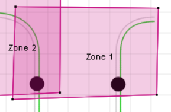
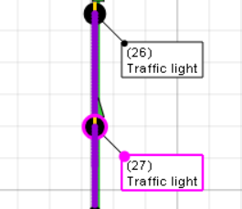
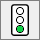
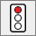

Trafficlights
This document contains information on how to use the trafficlights feature.
Updated 27.01.2021
Version History
| Version | Date | Author | Change |
|---|---|---|---|
| 1.0 | 27.01.2021 | Samuli Vaara | Initial documentation |
| 1.1 | 11.06.2021 | Aleksi Ålander | Renamed title, minor formating corrections. |
| 1.2 | 16.08.2022 | Samuli Vaara | QueueCount and PassCount information added |
Quick Overview
Trafficlights provides a way to control traffic with external commands at intersections. Navithor will request a status for the trafficlight and provide information on how many AGVs are waiting to pass the trafficlight and also report a priority based on the the AGVs current task and state. The external system that controls has the authority over the control of the trafficlights, Navithor cannot control the state of the trafficlights on its own. There are three MES messages that are used by this feature. TrafficLightStatus, TrafficLightStatusRequest and MESMessageSubscription.
Adding trafficlights

Trafficlight Symbolic Point
Trafficlights are defined as symbolicpoints and they are added the same way as any other symbolicpoint. They must be placed on a route where only one lane is enabled as moving against the traffic light is not allowed.

Trafficlight Distance
Only addition with trafficlight symbolic points is that you are able to define a distance. The distance represent a distance before the trafficlight where Navithor will send requests to subscribed MES clients that controls the trafficlights when it detects AGVs waiting to pass. More about the functionality in the Functionality section.
Trafficlight Zone
For trafficlights to properly work, you must also define a zone. The ID of the zone becomes the group ID for the traffic light. This zone should contain all trafficlights of an intersection along with the intersection area. After an AGV passes a trafficlight, Navithor will keep on requesting Green status for the trafficlight until the AGV leaves the zone.
Limitations
There are currently two additional limitation for this feature.
| Image | Description |
|---|---|
|  | Single trafficlight must NOT be part of of multiple trafficlight zones. |
|  | Queues of trafficlights must NOT overlap. |
Functionality
Changing status of a trafficlight
AGVs are only allowed to pass through a trafficlight when the status is set green. This status is set by the MES message TrafficLightStatus. Navithor does not control the lights in any way. However, if the status message is not received within 20 seconds (default), the status of the light is considered None
Subscribing to traffic lights
It is possible to subscribe to trafficlights with MESMessageSubscription message. Subscribing allows Navithor to send TrafficLightStatusRequest messages periodically to the subscribing client. You can define the interval in the subscription message with the fields IntervalGreen and IntervalNone. IntervalGreen is used when requested status is green, in all other cases IntervalNone is used. Setting IntervalNone also changes the status validity time (default 20 seconds) to 2 * IntervaNone
Trafficlight status requests
| Information | Description |
|---|---|
| ID | ID of the trafficlight. |
| Group | Group ID of the trafficlight. |
| RequestedStatus | Status navithor is requesting. |
| Priority | Highest priority of AGVs in queue to the trafficlight. |
| QueueCount | Amount of AGVs behind the trafficlight, waiting to pass. |
| PassCount | Amount of AGVs that have passed the trafficlight but are still inside the intersection area. |
The status requests provide information about how many AGVs are waiting behind the trafficlights, amount of AGVs that have passed but are still within the intersection area, highest Priority of the AGVs in queue, and what status is requested. Once an AGV enters the queuing area of a trafficlight, Navithor will request the status to be set green. It will continue to do so until there are no AGVs in the queue. After the status is set green, AGVs will move past the trafficlight. Navithor will keep on requesting status green until the AGV has moved out of the trafficlight area.
Modifying trafficlight icons
If you wish to modify how the trafficlights look like, it can easily be done by replacing the trafficlight icons in the clients Icons folder. Same goes for other symbolic point icons.
| TrafficLightNone | TrafficlightGreen | TrafficLightYellow | TrafficLightRed |
|---|---|---|---|
|  |  |
MES Messages
See more detailed explanations from the document Communication specification between Navithor and MES.
TrafficLightStatusRequest (ID = 346)
Trafficlight status request sent to all subscribed MES clients. Informs AGV count, priority and the status requested.
TrafficLightStatus (ID = 347)
This message is used to control the status of a trafficlight.
MESMessageSubscription (ID = 348)
This message is used to subscribe to various messages.